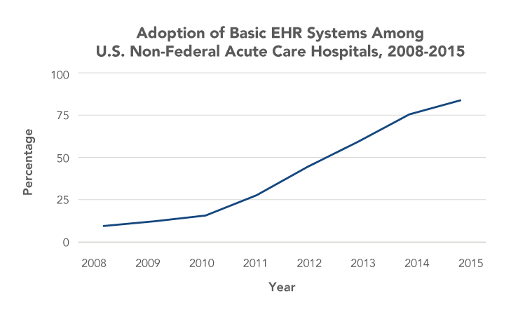
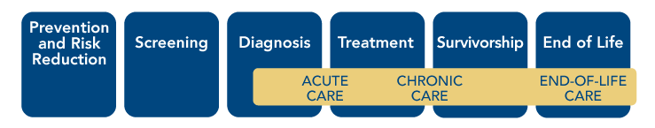

Part 1:
Connected Health and Cancer: The Time Is Now
Growing Role of Technology in Society and Health
Technology has become nearly ubiquitous in modern society and has transformed the ways in which people shop, bank, travel, and manage their daily lives (Figure 1). Widespread uptake of technology has significant implications for health and healthcare, creating new ways to collect and access information, communicate, and use data to support decision making. The use of technology to facilitate the efficient and effective collection, flow, and use of health information is referred to as connected health.
Figure 1
Consumer Use of Technology
![This infographic illustrates several statistics related to consumer use of technology.
Among U.S. adults surveyed in 2015, 84 percent reported using the Internet; 73 percent reported going online daily; and 21 percent reported being online “almost constantly.”
Among U.S. adults surveyed in 2015, 92 percent reported owning a cell phone and 68 percent reported having a smartphone.
Among U.S. adults surveyed in 2015, 70 percent reported searching the Internet first when they want health or medical information.
1 in 20 Google searches are for health-related information.](img/Figures/Final/Figure1.png "Figure 1. Consumer Use of Technology")
View Figure Sources
Perrin A, Duggan M. Americans' Internet access: 2000-2015. Washington (DC): Pew Research Center; 2015 Jun 26. Available from: http://www.pewinternet.org/2015/06/26/americans-internet-access-2000-2015/;
Perrin A. One-fifth of Americans report going online 'almost constantly' [Internet]. Washington (DC): Pew Research Center; 2015 Dec 8 [cited 2016 Feb 24]. Available from: http://www.pewresearch.org/fact-tank/2015/12/08/one-fifth-of-americans-report-going-online-almost-constantly/;
Anderson M. Technology device ownership: 2015. Washington (DC): Pew Research Center; 2015 Oct 29. Available from: http://www.pewinternet.org/2015/10/29/technology-device-ownership-2015;
National Cancer Institute. Health information seeking on behalf of others: characteristics of "surrogate seekers." HINTS Briefs No. 29 [Internet]. 2015 Sep [cited 2016 Mar 2]. Available from: http://hints.cancer.gov/docs/Briefs/HINTS_Brief_29.pdf;
Ramaswami P. A remedy for your health-related questions: health info in the Knowledge Graph [Internet]. Mountain View (CA): Google; 2015 Feb 10 [cited 2016 Mar 2]. Available from: https://googleblog.blogspot.co.uk/2015/02/health-info-knowledge-graph.html
Connected health encompasses a variety of technologies—such as devices, tools, and software—being used by and developed for healthcare stakeholders, including healthy individuals, patients, family members and caregivers, healthcare providers, healthcare systems, public health programs, and researchers. Consumers frequently turn to technology to help them manage their health and healthcare. The Internet is a commonly used source for health and medical information.[1,2] In addition, an increasing number of patients are accessing their medical records online and exchanging emails and text messages with their healthcare providers,[3] enabled by the rapid proliferation since 2009 of electronic medical records (see Electronic Health Records).[4-7] Wellness- and health-related devices and apps increasingly are being developed for consumers and healthcare providers, and many are in use today; their number is expected to increase many times over.
Electronic Health Records (EHRs)
EHR adoption has increased dramatically in recent years, spurred largely by financial incentives established in the Health Information Technology for Economic and Clinical Health (HITECH) Act of 2009.
Source: Henry J, Pylypchuk Y, Searcy T, Patel V. Adoption of electronic health record systems among U.S. non-federal acute care hospitals: 2008-2015. ONC Data Brief No. 35 [Internet]. 2016 May [cited 2016 Aug 3]. Available from: http://dashboard.healthit.gov/evaluations/data-briefs/non-federal-acute-care-hospital-ehr-adoption-2008-2015.php
President’s Cancer Panel Focus on Connected Health
The President’s Cancer Panel held a series of workshops across the United States in 2014–2015 to explore the role and potential of connected health in cancer prevention, care, and research in the United States. Cancer is the second most common cause of death in the United States, exceeded only by heart disease. More than 1.6 million people in the United States are diagnosed with cancer each year. As of 2014, nearly 14.5 million people in the United States were living with a personal history of cancer.[8] Although cancer prevention, early detection, and treatment have improved over the past several decades,[9,10] cancer care delivery will face significant challenges in coming years as the U.S. population ages, the oncology workforce shrinks, the costs of cancer care continue to grow, and medical advances expand treatment options.[11,12] Technology-based solutions have been proposed to address challenges in cancer and many other areas of healthcare. The potential benefits of connected health are particularly pronounced for cancer for several reasons.
- Cancer has lifelong implications. Cancer diagnoses are life-changing for patients and often impose significant burdens on families and caregivers. Patients may struggle to understand their diagnoses and test results, including genomic testing results. They likely will interact with numerous providers and often must manage vast quantities of personal health information. They make decisions about treatment options and, in many cases, lack full access to the information needed to make informed choices. They also may have questions about participating in clinical trials. Challenges persist when patients transition out of active treatment. Some are faced with decisions about end-of-life care, while others cope with increased monitoring and may deal with long-term and late effects of their diseases and treatments for the rest of their lives. All of this may be compounded by financial strains due, in part, to the burden of cancer treatment. Cancer patients and their families and caregivers need varying types and levels of support throughout the different phases of treatment, from the time of diagnosis through survivorship and/or end of life. Healthy individuals also would benefit from information and resources that could help them reduce their cancer risk and increase the likelihood of early diagnosis through screening. Connected health could help individuals across the cancer continuum access and use information and resources, as well as better manage their health and cancer care (Figure 2).
- Quality cancer care requires extensive coordination. Cancer care frequently involves multiple interventions delivered by a variety of healthcare professionals who often are located in distinct clinical settings (see Cancer Care Coordination). There also are numerous transitions in care as patients move between active treatment, survivorship care, and/or end-of-life care. Patients and their family members and caregivers are critical components of the care team and play important roles in care coordination. Frequent and extensive communication among patients, their family members and caregivers, and providers is essential to ensure patients receive evidence-based care consistent with their preferences and values. This is particularly challenging within the U.S. healthcare system, which often is fragmented and difficult to navigate. Connected health could help all stakeholders communicate and access information in timely and efficient ways, enabling delivery of higher-quality care.
- Cancer biology is complex. Cancer is a not a single disease but, rather, a set of diseases driven by myriad molecular aberrations and influenced by numerous environmental and lifestyle factors. Past research has led to development of targeted therapies for some cancer subtypes in recent years, improving outcomes for many patients. Knowledge of factors underlying development of various cancer subtypes and their responses to treatment is expected to increase even more in coming years through efforts such as the Precision Medicine Initiative (PMI)[13] (see Precision Medicine Initiative) and the Cancer Moonshot[14] (see Cancer Moonshot in Objective 5 ), opening the door to exciting advances in cancer prevention and treatment. Individuals and physicians will need tools to help them effectively manage and use the unprecedented volumes of data that will be available to inform personal and clinical decision making.
Figure 2
Cancer Control Continuum
Cancer Care Coordination
A study in the United Kingdom found that cancer patients met with at least 13 different doctors during the course of their cancer care. More than half of patients met with 30 or more doctors. One primary care physician recently recounted his experience when one of his patients was diagnosed with bile duct cancer. In the 80 days between the day the tumor was detected via computed tomography scan and its removal, the physician had 40 communications with 11 other providers and communicated with the patient or the patient's wife 12 times.
![This graphic illustrates interactions and communications between a primary care physician, patient, and other members of the patient’s care team over the 80-day period after the patient is diagnosed with bile duct cancer. Other members of the patient care team include a surgeon, hematologist, neurologist, gastroenterologist, lab worker, social worker, pathologist, cardiologist, oncologist, interventional radiologist, and urologist. Phone calls, emails, procedures, and office visits are all represented by different color lines. The primary care physician had 40 communications with 11 other providers and communicated with the patient or the patient’s wife 12 times over the course of 80 days.](img/Figures/Final/sidebar2.png "Ambulatory Care Coordination for One Patient over 80-Day Period")
Sources: Press MJ. Instant replay—a quarterback's view of care coordination. N Engl J Med. 2014;371(6):489-91. Copyright © 2014 Massachusetts Medical Society. Reprinted with permission from Massachusetts Medical Society; Smith SD, Nicol KM, Devereux J, Cornbleet MA. Encounters with doctors: quantity and quality. Palliat Med. 1999;13(3):217-23. Available from: http://www.ncbi.nlm.nih.gov/pubmed/10474708
Precision Medicine Initiative
The PMI was launched by President Obama in 2015 to enable a new era of medicine through research, technology, and policies that empower patients, researchers, and providers to work together toward development of individualized care. The goal of precision medicine is to better prevent and treat diseases by taking into account individual differences in people’s genes, environments, and lifestyles. As part of PMI, the National Institutes of Health is creating a voluntary national research cohort of at least 1 million people from diverse backgrounds. Although PMI will yield insights in a number of areas, cancer is a high priority. As part of PMI, the National Cancer Institute is expanding its investment in precision oncology with the goal of using genomics to identify and target molecular vulnerabilities of individual cancers.
Sources: The White House Office of the Press Secretary. President Obama's Precision Medicine Initiative [Fact Sheet]. Washington (DC): the White House; 2015 Jan 30. Available from: https://www.whitehouse.gov/the-press-office/2015/01/30/fact-sheet-president-obama-s-precision-medicine-initiative; National Institutes of Health. About the Precision Medicine Initiative Cohort Program [Internet]. Bethesda (MD): NIH; [cited 2016 Mar 23]. Available from: https://www.nih.gov/precision-medicine-initiative-cohort-program; National Cancer Institute. NCI and the Precision Medicine Initiative [Internet]. Bethesda (MD): NCI; [updated 2016 Mar 10; cited 2016 Mar 23]. Available from: http://www.cancer.gov/research/key-initiatives/precision-medicine
The Panel learned about many exciting and promising applications of technology in health and healthcare, and examples are described throughout this report.* However, patients and providers who use these technologies often report significant challenges and frustrations. Patients say they frequently identify errors in their medical records and have difficulties getting these errors corrected. Physicians report that EHRs disrupt their workflows and that they spend hours each week, often outside the office, entering data. Many patients and physicians feel that technology interferes with the personal interactions that are so critical to patient-centered care. Current technologies do not yet support free exchange of health information—EHR systems at different organizations, even those created by the same vendor, often are not interoperable.[15-18] Thus, healthcare information often still is shared via fax or in paper form by patients themselves, even when the data are in digital form. Furthermore, technical barriers and inadequate models for patient consent have precluded large data sets stored in EHRs from being used for surveillance or large-scale research activities. These barriers to effective implementation of technology in healthcare are significant threats to quality cancer care.
The Panel concluded that although connected health for cancer has not yet been achieved, technology has significant potential to help accomplish the following critical goals: improve the experience of care for cancer patients and their caregivers, improve the experience of the oncology workforce in providing care, and reduce the burden of cancer at the population level (Figure 3). To accomplish these goals, technologies must be developed and implemented thoughtfully and then continually improved based on users’ experiences and evidence. Cross-sector collaborations among those in the healthcare, biomedical research, and technology fields will be essential. The Panel has identified several principles that should guide efforts to expand and improve applications of technology in cancer to advance connected health in ways that truly support efficient and effective collection, flow, and use of information (see Principles of Connected Health).
Figure 3
Connected Health Can Help Achieve Critical Cancer Care and Research Goals
![This graphic is a circle. At the center of the circle is “connected health.” Surrounding connected health is a ring with the terms surveillance, risk reduction, cancer care, and research. This illustrates that connected health enables these activities. The outer ring of the circle is made up of three segments representing cancer-related goals: (1) improved care experience for patients and caregivers, (2) increased oncology workforce satisfaction in providing care, and (3) reduced cancer burden at population level.](img/Figures/Final/Figure3.png "Figure 3. Connected Health Can Help Achieve Critical Cancer Care and Research Goals")
View Figure Sources
Note: These goals were informed by the Triple Aim, which was developed by the Institute for Healthcare Improvement, and recent proposals to expand the Triple Aim to the Quadruple Aim with the addition of a goal focused on improving the experience of the healthcare workforce in providing care.
Sources: Institute for Healthcare Improvement. The IHI Triple Aim [Internet]. Cambridge (MA): IHI; [cited 2016 Aug 25]. Available from: http://www.ihi.org/engage/initiatives/tripleaim/pages/default.aspx; Berwick DM, Nolan TW, Whittington J. The triple aim: care, health, and cost. Health Aff (Millwood). 2008;27(3):759-69. Available from: http://www.ncbi.nlm.nih.gov/pubmed/18474969; Sikka R, Morath JM, Leape L. The Quadruple Aim: care, health, cost and meaning in work. BMJ Qual Saf. 2015;24(10):608-10. Available from: http://www.ncbi.nlm.nih.gov/pubmed/26038586; Bodenheimer T, Sinsky C. From triple to quadruple aim: care of the patient requires care of the provider. Ann Fam Med. 2014;12(6):573-6. Available from: http://www.ncbi.nlm.nih.gov/pubmed/25384822
Principles of Connected Health
- Systems and interfaces for data collection and use are designed and implemented to meet the needs of people using them.
- Individuals are empowered to decide when, whether, and how much to participate in their health and healthcare and whether and how to involve their family members and caregivers. Decisions about participation may change over time.
- A culture of collaboration ensures that data are shared in a timely manner and appropriate formats to enable patient engagement, decision making, patient-centered clinical care, and research.
- Information is accurate and complete. Potential errors are addressed when identified.
- Privacy/confidentiality of individuals and their data are protected.
- Technology and computational power are harnessed to simplify tasks and make large and complicated data sets more usable.
- All populations benefit from connected health, regardless of income, education, race/ethnicity, age, disability, or geography.
Footnotes
* Inclusion of examples in this report does not represent endorsement by the President’s Cancer Panel of any organization, company, or product.
References
- National Cancer Institute. Health information seeking on behalf of others: characteristics of "surrogate seekers." HINTS Briefs No. 29 [Internet]. 2015 Sep [cited 2016 Mar 2]. Available from: http://hints.cancer.gov/docs/Briefs/HINTS_Brief_29.pdf
- Ramaswami P. A remedy for your health-related questions: health info in the Knowledge Graph [Internet]. Mountain View (CA): Google; 2015 Feb 10 [cited 2016 Mar 2]. Available from: https://googleblog.blogspot.co.uk/2015/02/health-info-knowledge-graph.html
- Office of the National Coordinator for Health Information Technology. Trends in individuals use of health IT: 2012-2014, Health IT Quick-Stat #46 [Internet]. Washington (DC): ONC; 2015 Jun [cited 2016 Feb 24]. Available from: http://dashboard.healthit.gov/quickstats/pages/FIG-Individuals-Health-IT-Use.php
- Heisey-Grove D, Patel V. Any, certified, and basic: quantifying physician EHR adoption through 2014. ONC Data Brief No. 28 [Internet]. 2015 Sep [cited 2015 Dec 10]. Available from: https://www.healthit.gov/sites/default/files/briefs/oncdatabrief28_certified_vs_basic.pdf
- Hsiao C-J, Hing E. Use and characteristics of electronic health record systems among office-based physician practices: United States, 2001-2013. NCHS Data Brief No. 143 [Internet]. 2014 Jan [cited 2016 Mar 23]. Available from: http://www.cdc.gov/nchs/data/databriefs/db143.htm
- Henry J, Pylypchuk Y, Searcy T, Patel V. Adoption of electronic health record systems among U.S. non-federal acute care hospitals: 2008-2015. ONC Data Brief No. 35 [Internet]. 2016 May [cited 2016 Aug 3]. Available from: http://dashboard.healthit.gov/evaluations/data-briefs/non-federal-acute-care-hospital-ehr-adoption-2008-2015.php
- Office of the National Coordinator for Health Information Technology. Office-based physician electronic health record adoption: 2004-2014, Health IT Quick-Stat #50 [Internet]. Washington (DC): ONC; 2015 Sep [cited 2016 Jul 6]. Available from: http://dashboard.healthit.gov/quickstats/pages/physician-ehr-adoption-trends.php
- American Cancer Society. Cancer facts & figures 2016. Atlanta (GA): ACS; 2016. Available from: http://www.cancer.org/research/cancerfactsstatistics/cancerfactsfigures2016/
- National Cancer Institute. Cancer trends progress report [Internet]. Bethesda (MD): NCI; 2015 Mar [updated 2015 Nov; cited 2016 Feb 24]. Available from: http://progressreport.cancer.gov/
- American Cancer Society. Cancer death rate continues steady drop [Press Release]. Atlanta (GA): ACS; 2016 Jan 7. Available from: http://pressroom.cancer.org/Cancer-Stats2016
- Institute of Medicine. Delivering high-quality cancer care: charting a new course for a system in crisis. Levit L, Balogh E, Nass S, Ganz P, editors. Washington (DC): The National Academies Press; 2013 Sep 10. Available from: https://www.nap.edu/18359
- American Society of Clinical Oncology. The state of cancer care in America, 2014: a report by the American Society of Clinical Oncology. J Oncol Pract. 2014;10(2):119-42. Available from: http://www.ncbi.nlm.nih.gov/pubmed/24618075
- The White House Office of the Press Secretary. President Obama's Precision Medicine Initiative [Fact Sheet]. Washington (DC): the White House; 2015 Jan 30. Available from: https://www.whitehouse.gov/the-press-office/2015/01/30/fact-sheet-president-obama-s-precision-medicine-initiative
- The White House. Cancer Moonshot [Internet]. Washington (DC): the White House; [cited 2016 Jul 5]. Available from: https://www.whitehouse.gov/CancerMoonshot
- JASON. A robust health data infrastructure. McLean (VA): The MITRE Corporation; 2013 Nov. Available from: https://www.healthit.gov/sites/default/files/ptp13-700hhs_white.pdf
- JASON. Data for individual health. McLean (VA): The MITRE Corporation; 2014 Nov. Available from: https://healthit.ahrq.gov/sites/default/files/docs/publication/2014-jason-data-for-individual-health.pdf
- President’s Council of Advisors on Science and Technology. Realizing the full potential of health information technology to improve healthcare for Americans: the path forward. Washington (DC): Executive Office of the President; 2010 Dec. Available from: https://www.whitehouse.gov/sites/default/files/microsites/ostp/pcast-health-it-report.pdf
-
President’s Council of Advisors on Science and Technology. Better health care and lower costs: accelerating improvement through systems engineering. Washington (DC): Executive Office of the President; 2014 May. Available from: https://www.whitehouse.gov/sites/default/files/microsites/ostp/PCAST/
pcast_systems_engineering_in_healthcare_-_may_2014.pdf